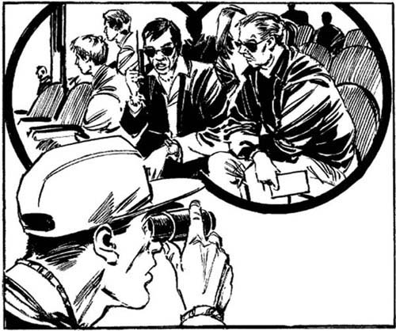
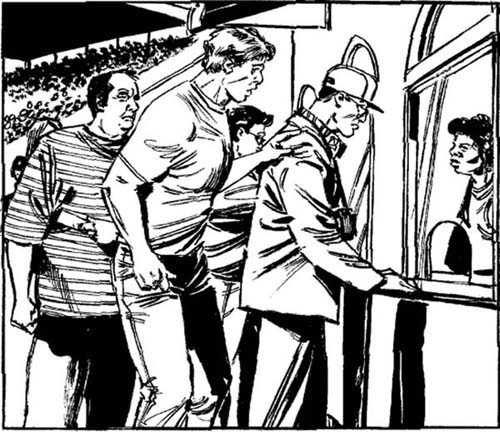
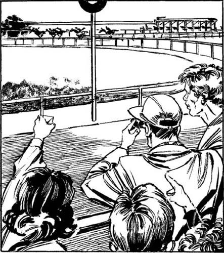

8
Listen to Part 1:

Golden Dragon
Trời nắng như thiêu khi tôi lái xe đến trường đua Santa Rosita. Tôi lại đội mũ lưỡi trai và đeo kính đen. Chiếc ống nhòm được để trên xe. Trong túi tôi là tấm thẻ bảo vệ xanh, 50 đô la và khẩu súng.
Tôi nghĩ đến Sandy. Tại sao cô ấy gọi cho tôi? Và tại sao cô ấy lại đột nhiên ngừng nói? Tại sao cô ấy lại nhắc đến tên, Golden Dragon? Bây giờ, Bố Già đang ở đâu?
‘Có lẽ tôi sẽ lại nhìn vào chuồng 14,’ tôi tự nhủ. ‘Tôi không làm việc cho Sandy Bonner nữa. Nhưng có ai đó đánh tôi bên ngoài chuồng 14. Có ai đó không muốn tôi nhìn vào bên trong. Tại sao?’
Tôi nhìn lên bầu trời xanh và mặt trời nóng bỏng. Hôm nay thật là một ngày đẹp. Tôi quyết định sẽ xem một vài vòng đua trước khi đến chuồng 14.
Trường đua rất đông đúc. Hôm nay là thứ bảy và hàng nghìn người đến xem các cuộc đua. Bãi đỗ xe chật cứng xe. Tôi trả 20 đô la cho vé vào trường đua. Tôi trả 10 đô la cho vé đỗ xe. Bây giờ, tôi còn 20 đô la. Tôi cầm ống nhòm và đi về phía đường đua.
Có rất nhiều người đứng bên đường đua. Và rất nhiều người ngồi trên khán đài. Tất cả mọi người đều đang xem cuộc đua. Tôi đứng bên đường đua và xem ba vòng đua. Chúng rất thú vị.
Nhiều người đặt cược vào ngựa. Họ chọn con ngựa mà họ muốn thắng một cuộc đua. Họ đặt cược vào nó. Họ cược con ngựa đó sẽ thắng cuộc đua. Họ trả tiền tại phòng cá cược. Nếu ngựa đó không giành chiến thắng trong cuộc đua, phòng cá cược sẽ giữ tiền của họ. Nếu con ngựa họ chọn là con chiến thắng, phòng cá cược sẽ trả cho họ nhiều tiền hơn số tiền họ đã trả.
Có một phòng cá cược ở trường đua. Những người đến xem cuộc đua có thể đặt cược tại phòng cá cược này. Nhưng cũng có những phòng cá cược ở khắp mọi nơi trên đất nước. Những người không có mặt tại trường đua cũng có thể đặt cược vào các cuộc đua ở Santa Rosita.
Sau mỗi cuộc đua, sẽ có thông báo từ hệ thống loa phóng thanh của trường đua. Thông báo này cho mọi người biết con ngựa nào đã giành chiến thắng trong cuộc đua. Những người đã đặt cược vào con chiến thắng rất vui!
Listen to Part 2:
Rất nhiều người xem cuộc đua qua ống nhòm. Tôi đã mang ống nhòm theo mình. Nhưng tôi không dùng ống nhòm để xem ngựa. Tôi xem những người khác. Tôi đang tìm một người đàn ông cao gầy.
Đột nhiên, tôi nhìn thấy anh ta. Anh ta đang ngồi trên khán đài. Anh ta khoảng ba mươi tuổi và đeo kính đen và mặc vest đen. Đó là người đàn ông mà tôi đã nhìn thấy ở trang trại và trong chiếc xe 4x4 màu đỏ. Anh ta đang nói chuyện với một người đàn ông khác ngồi cạnh mình. Người đàn ông kia già hơn anh ta khoảng mười tuổi. Ông ta cao và nặng. Ông ta có mái tóc dài màu đỏ, buộc đuôi ngựa. Ông ta mặc áo khoác màu nâu. Sandy đã kể cho tôi về người đàn ông này. Đó là Dick Gates!
Tôi theo dõi hai người đàn ông qua ống nhòm. Họ không thể nhìn thấy tôi. Hai người đàn ông đang nói chuyện và xem cuộc đua. Người đàn ông tóc đen có điện thoại di động và anh ta đang thực hiện rất nhiều cuộc gọi.

Tôi chuyển hướng ống nhòm và nhìn một số người khác trong đám đông. Đột nhiên, tôi nhìn thấy một người đàn ông khác mà tôi biết – Herman!
Herman bắt đầu đi về phía tôi. Anh ta cách tôi khoảng một trăm mét nhưng anh ta chưa nhìn thấy tôi. Tôi không muốn nói chuyện với Herman. Nhưng tôi muốn theo dõi hai người đàn ông kia, nên tôi không di chuyển.
Herman ngày càng đến gần. Có hàng trăm người gần đường đua, nhưng Herman to và cao. Rất dễ để nhìn thấy anh ta! Bây giờ anh ta chỉ cách tôi hai mươi mét. Tôi quay lưng và bắt đầu đi nhanh khỏi anh ta.
Tôi đi đến phòng cá cược. Đây là một tòa nhà dài, thấp với nhiều cửa sổ. Mọi người xếp hàng ở các cửa sổ. Họ đang chờ để đặt cược. Đằng sau mỗi cửa sổ, có một người lấy tiền của mọi người và ghi lại thông tin chi tiết về tiền cược của họ. Tôi xếp hàng.
‘Có lẽ Herman sẽ không thấy tôi,’ tôi nghĩ.
Rồi một bàn tay vỗ vào lưng tôi – một bàn tay rất to!
Listen to Part 3:
‘Chào Lenny!’ Herman nói lớn. ‘Cậu đang làm gì ở đây? Cậu thích đua xe à? Tớ không biết điều đó.’
‘Chào Herman,’ tôi trả lời nhanh. ‘Ừ. Tớ thích đua xe. Tớ định đặt cược vào vòng đua tiếp theo.’ Tôi mỉm cười với tên vệ sĩ to lớn và chỉ vào hàng người xếp hàng tại phòng cá cược. Herman xếp hàng đằng sau tôi.
‘Tớ muốn nói chuyện với cậu về tiền của tớ, Lenny,’ Herman nói. ‘Cậu đã nhầm lẫn khi đưa cho tớ phong bì. Trong đó chỉ có 150 đô la thôi.’
‘Ôi! Tớ xin lỗi vì điều đó, Herman,’ tôi nói. Hàng người đang di chuyển. Tôi sắp đến phòng cá cược rồi.
‘Đừng lo lắng về điều đó,’ Herman nói với một nụ cười lớn. ‘Giờ trả tám trăm năm mươi đô cho tớ.’
Tôi gần như đến đầu hàng. Tôi gần như đến phòng cá cược rồi. Phía trước tôi có một người đàn ông. Tôi không biết phải làm gì.
‘Herman —’ Tôi bắt đầu.
‘Đến lượt cậu rồi, Lenny!’ Herman nói. Anh ta đẩy tôi về phía trước.

Đột nhiên, tôi đứng trước phòng cá cược. Đằng sau phòng cá cược là một người phụ nữ.
Listen to Part 4:
‘Có chuyện gì vậy?’ người phụ nữ hỏi.
Tôi lấy tiền ra khỏi túi. Tôi có 20 đô la. Và tôi phải nhanh chóng đặt cược vào một con ngựa. Tôi không biết nên chọn con nào. Tôi nhìn vào danh sách ngựa cho cuộc đua tiếp theo. Và tôi thấy một cái tên mà tôi biết – Golden Dragon.
Golden Dragon sẽ chạy trong cuộc đua tiếp theo. Chỉ một số ít người đặt cược vào con ngựa này. Cái tên có tỷ lệ cược là 50 chọi 1.
‘Nếu Golden Dragon giành chiến thắng trong cuộc đua, tớ sẽ nhận được gấp năm mươi lần số tiền tớ đặt cược vào nó,’ tôi nghĩ.
‘Tôi muốn đặt cược 20 đô la vào Golden Dragon để giành chiến thắng trong cuộc đua tiếp theo,’ tôi nhanh chóng nói.
Người phụ nữ lấy tiền của tôi. Cô ấy đưa cho tôi một tờ giấy ghi chi tiết về tiền cược của tôi. Tôi quay lại phía Herman.
‘Tôi định xem cuộc đua này,’ tôi nói. ‘Sau đó, tôi sẽ trả tiền cho anh.’
‘Được rồi, Lenny,’ Herman nói. ‘Chúng ta hãy cùng xem cuộc đua.’
Herman đặt cược vào một con ngựa tên là Margarita. Sau đó, chúng tôi đi bộ đến đường đua. Chúng tôi chờ cuộc đua bắt đầu. Tôi nhìn qua ống nhòm. Dick Gates và người bạn của anh ta đang ngồi trên ghế của họ. Người đàn ông tóc đen lại đang nói vào điện thoại di động của mình.
‘Margarita sẽ thắng, Lenny. Margarita sẽ giành chiến thắng trong cuộc đua này,’ Herman nói. ‘Cô ấy đã giành chiến thắng trong hai cuộc đua gần đây nhất của mình.’
Listen to Part 5:
‘Không, Golden Dragon sẽ thắng,’ tôi nói.
Herman cười. ‘Golden Dragon!’ anh ta nói. ‘Đó là con ngựa chậm nhất trong cuộc đua. Nó chưa từng thắng cuộc đua nào.’
Các con ngựa đang đi về phía cổng xuất phát.
Herman chỉ vào một con ngựa lớn màu nâu. Người cưỡi ngựa của nó mặc áo sơ mi màu vàng và đen. ‘Đó là Golden Dragon,’ anh ta nói. ‘Nó sẽ không thắng!’
‘Golden Dragon lớn và khỏe,’ tôi nói.
Herman nhìn lại con ngựa. ‘Ừ, cậu nói đúng,’ anh ta nói. ‘Nó thật sự lớn và mạnh. Nhưng nó là kẻ thua cuộc. Margarita sẽ giành chiến thắng.’
Tôi nhìn những con ngựa qua ống nhòm. Chúng đã sẵn sàng để bắt đầu cuộc đua. Sau đó, tôi nhanh chóng nhìn vào khán đài. Dick Gates và người bạn của anh ta đang cầm ống nhòm. Họ đang xem những con ngựa ở cổng xuất phát.
Đột nhiên, đám đông hét lên. Cổng xuất phát đã mở. Cuộc đua đã bắt đầu! Tôi nhìn những con ngựa phi nước đại dọc theo đường đua. Golden Dragon là con ngựa chậm nhất!
